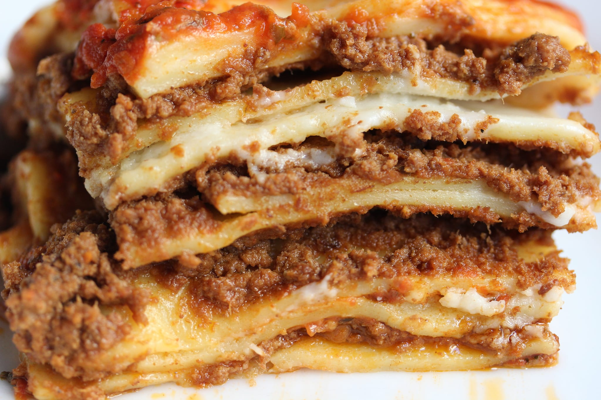

Recipe for Lasagna

Description
Homemade Italian Lasagna, made with homemade sauce, and filled with
ricotta cheese, Italian sausage, and lots of cheese.
Serve with crusty Italian bread.
Ingredients
9 thick slices bacon, diced
1 ½ teaspoons Italian seasoning
2 (28 ounce) cans tomato sauce
1 (16 ounce) package lasagna noodles
2 pints part-skim ricotta cheese
2 teaspoons chopped fresh parsley
8 slices provolone cheese
6 cups shredded mozzarella cheese